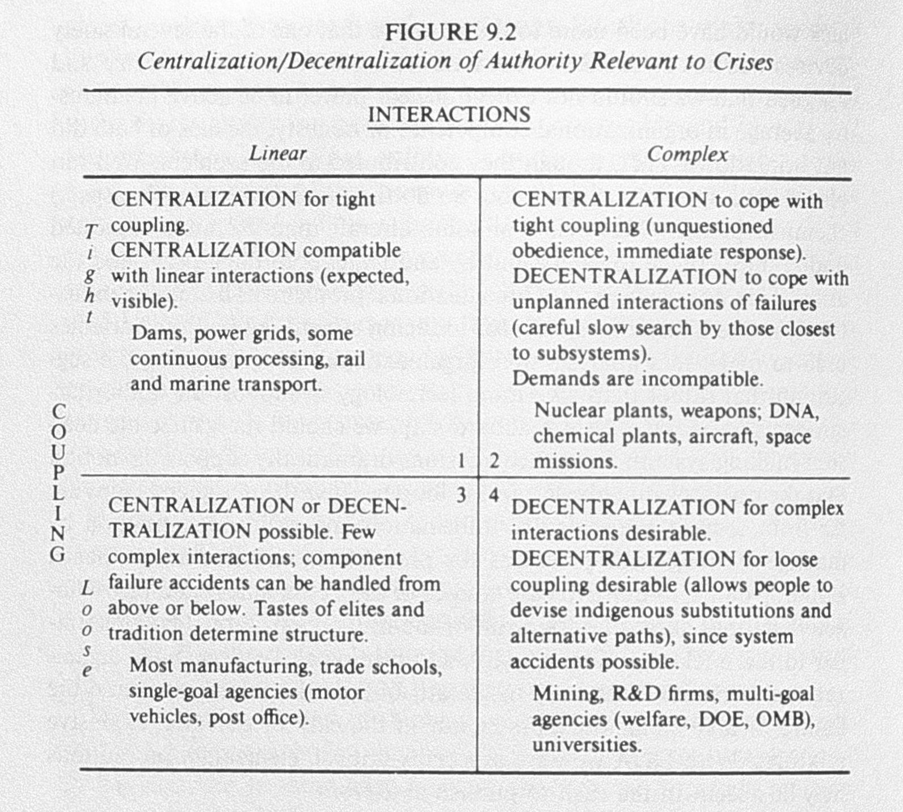

chart redrawn, p. 349
chart redrawn, p. 349
I was introduced to Tim Harford's Cautionary Tales by means of Roman Mars' 99% Invisible. The hosted episode was Episode 3 - LaLa Land: Galileo’s Warning . He covers the LaLa Land / Moonlight mix-up at the Oscars in 2017, and how it could be explained . Give it a listen, it's only 30 minutes long and absolutely fascinating. He covers the core concepts of all the rambling below.
You can also read his article on Normal Accidents pre-Oscar fiasco here.
The book used to explain the mechanics of that night was Normal Accidents: Living with High-Risk Technologies, by Charles Perrow. Charles was inspired to investigate complex and potentially catastrophic systems after the Three Mile Island accident. His main argument was that in a system that is both highly complex and tightly coupled, failure is inevitable.
Below is a summary of his work.
There are two kinds of interactions
Linear - interactions of one component in DEPOSE (Design, Equipment, Procedures, Operations, Supplies/materials, and Environment) with one or more components that proceed or follow it immediately in the sequence of production. They are familiar and expected in the production/maintenance sequence, and even if unplanned, are quite visible even if unplanned.
Complex - when one component can interact with one or more outside of the normal production sequence, either by design or not. They are unfamiliar, unplanned, or unexpected. They are also not visible or immediately comprehensible.
To explain the immediate effects one component has on another (or more), Charles describes the levels of coupling
Tight Coupling - a mechanical term meaning there is no slack or buffer between two things. What happens in one directly affects what happens in the other
Loose Coupling =/= inefficient. It allows certain parts of the system to express themselves according to their own logic or interests
processing delays possible

He then plots how various industries, companies, and organizations land on these interactions. The upper-right quadrant posing the greatest potential risk given complexity, tight coupling, and catastrophic potential.

"When societies confront a new or explosively growing evil, the number of risk assesors probably grows. Whether they are shamans or scientists ... their function is not only to inform and advise the masters of these systems about the risks and benefits, but also, should the risk be taken, to legitimize and reassure the subjects." -p. 307
chart redrawn, p. 349
His conclusion with risky tech is to abandon, restrict, or tolerate and improve after basing on the cost of alternatives and net catastophic potential.
 along with varying levels of centralization/decentralization with the different interactions.
His book was published two years before the space shuttle Challenger disaster.
Future covers adopted this photo, taken 73 seconds after launch.

Political and bureaucratic pressure to ignore engineers calling for a delay resulted in the loss of seven astronauts.
back row: Ellison Onizuka, Sharon McAuliffe, Gregory Jarvis, Judith Resnik
front row: Michael Smith, Francis "Dick" Scobee, Ronald McNair